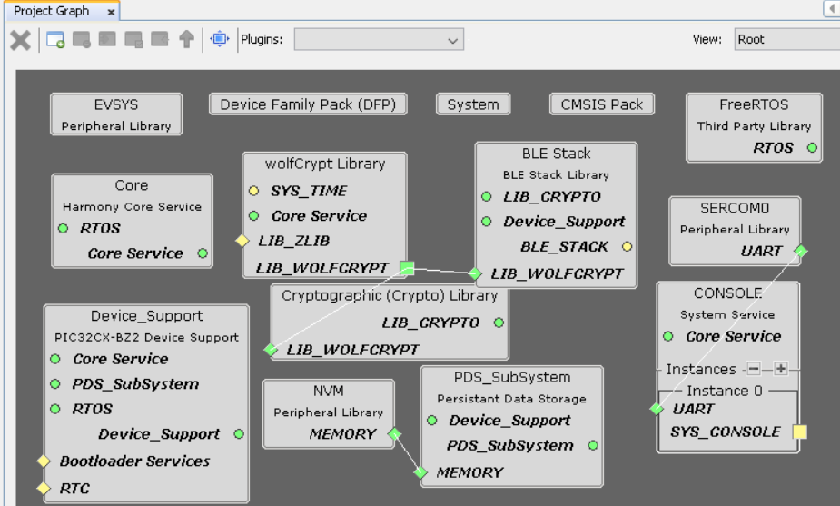
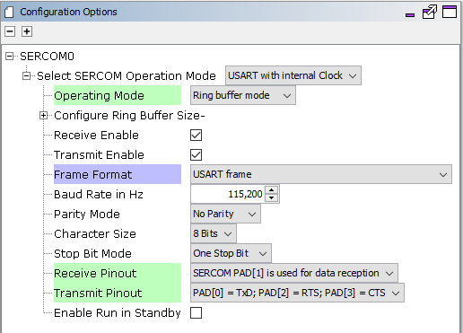

Getting Started with Peripheral Building Blocks
Getting Started with Central Building Blocks
BLE Peripheral Developers: FreeRTOS and BLE Stack Setup --> Adding UART --> Legacy Advertisements
BLE Central Developers: FreeRTOS and BLE Stack Setup --> Adding UART --> Legacy Scan
Introduction
This document will help users to enable UART functionality on WBZ451 Curiosity board using MPLAB Code Configurator
Users of this document can choose to just run the precompiled Application Example hex on the WBZ451 Curiosity Board and experience the demo or can go through the steps involved in enabling UART from scratch using MPLAB Code Configurator
Recommended Reads
Hardware Required
| Tool | Qty |
|---|---|
| WBZ451 Curiosity Board | 1 |
| Micro USB cable | 1 |
SDK Setup
Software
- 1.
Programming the precompiled hex file or Application Example
Programming the hex file using MPLABX IPE
- 1.
Precompiled Hex file is located in "<Harmony Content Path>\wireless_apps_pic32cxbz2_wbz45\apps\ble\building_blocks\chip_peripherals\uart_hello_world\hex" folder
- 2.
Follow the steps mentioned here
Caution: Users should choose the correct Device and Tool information
Programming the Application using MPLABX IDE
- 1.
Follow steps mentioned in of Running a Precompiled Example document
- 2.
Open and program the Application Example "uart_hello_world.x" located in "<Harmony Content Path>\wireless_apps_pic32cxbz2_wbz45\apps\ble\building_blocks\chip_peripherals\uart_hello_world\firmware" using MPLABX IDE
<Harmony Content Path> how to find what is my Harmony Content Path
Demo Description
This Application Example enables users to print data over a terminal emulator like TeraTerm
Testing
Connect the WBZ451 Curiosity board to PC, program the application example. Open Terarerm(Speed: 115200, Data: 8-bit, Parity: none, stop bits: 1 bit, Flow control: none) and select the COM port that is enumerated when connecting the WBZ451 Curiosity Board. Reset the board and Demo will print "Hello World"
Developing this Application from scratch using MPLAB Code Configurator
This section explains the steps required by a user to develop this application example from scratch using MPLABx Code Configurator
Tip: New users of MPLAB Code Configurator are recommended to go through the overview.
- 1.
Create a new MCC Harmony Project -- link for instructions
- 2.
Import component configuration -- This step helps users setup the basic components required to start their Application Development component configuration related to this Application is available. The imported file is of format .mc3 and is located in the path "<Harmony Content Path>\wireless_apps_pic32cxbz2_wbz45\apps\ble\building_blocks\chip_peripherals\uart_hello_world\firmware\uart_hello_world.X". Users should follow the instructions mentioned here to import the component configuration.
Tip: Import and Export functionality of component configuration will help users to start from a known working setup of configuration
- 3.
Accept Dependencies or satisfiers, select "Yes"
- 4.
Verify if the Project Graph window has all the expected configuration

Verify UART Configuration
- 1.
Select SERCOM0 component in project graph
 - 2.
Select system component in project graph
 Important:
Important:Direct - Digital peripheral is enabled on the default dedicated pins and can operate with Maximum Clock Frequency
PPS - Digital peripheral is enabled on pins selected by the MCC pin configurator and can operate with Maximum Clock Frequency/2
Generate Code
Instructions onhow to Generate CodeFiles and Routines Automatically generated by the MCC
After generating the program source from MCC interface by clicking Generate Code, the peripheral libraries (PLIBs) configuration can be found in the following project directories

The sercom initialization routine executed during program initialization can be found in the project files. This initialization routine is automatically generated by the MCC according to the user settings

Header Files
Header File associated with the sercom0 peripheral library or any other peripheral library for a different example is included in definitions.h file
Tip: To use all the SERCOM0 functionality include the definitions.h file in Application code
Function Calls
MCC generates and adds the code to initialize the UART peripheral in SYS_Initialize() function
SERCOM0_USART_Initialize() is the API that will be called inside the SYS_Initialize() function
User Application Development
Include
definitions.h in app.c (definitions.h is called to include the peripheral.h files)
app_idle_task.h in app.c
Transfer Data using UART
Add app_idle_task() in the function vApplicationIdleHook() in freertos_hooks.c
SERCOM0_USART_Write() is the used to submit a write buffer to the given USART peripheral to transfer data, user can call this API in APP_STATE_INIT:
Users can exercise various other UART/SERCOM functionalities by using the peripheral library documentation
Where to go from here
Central role BLE Scanner
Peripheral Role BLE Advertisements
Peripheral Role BLE Extended Advertisements (sleep)